Novelty Detection of Jet Engine Data
Problem context: How is the data collected?
Jet engines are some of the most complex and safety critical technologies used in transportation to date. The testing process is rigorous and continues throughout the life of the unit, with the most detailed form existing during static test-bed environments. Here, a multitude of sensors monitor engine performance to determine engine functionality and behaviour.
Unsurprisingly, this testing process generates high dimensional data due to the high sampling rate and number of sensors used, which makes the data challenging with regards to preprocessing. Additionally, the design importance place on reliability and robustness makes novel or abnormal events incredibly infrequent in nature. Both of these factors combined make this a high dimensional and highly imbalanced classification problem.
So the problem becomes, where in the data show the tell-tale signs of abnormal engine behaviour?
Goals: What is impact of my work?
Firstly, minimisation of false negative occurances during the testing process would reduce investigations from maintenance engineers, hence improving the efficiency of jet engine testing and giving the company a competitive edge.
Furthermore and more importantly, minimisation of false positives would reduce mis-detections which are of greater consequences depending on the reliance placed on the algorithm.
Problem Workflow:
For the purposes of confidentiality, all results from the work have been excluded. However the following demonstrates the generalised version of the used to distingush between normal and abnormal engine behaviour.
Relative Risk Analysis
In order to find a feature space that displayed discriminatory informatino between the two classes, the first two principle components from PCA (Principle Component Analysis) were used. Here, the likelihood ratio was used identify the relative risk of detecting the engine behvaiour.
Performing this analysis provided a means to check whether the likelihood ratio would exceeded a specified threshold, which would indicate areas of concern, for a given feature space, or subspace. Depending on the threshold, descriptive and nonlinear decision boundaries were formed, which were able to successfully characterised class distributions.
Below shows an example of the liklihood ratio on some random data. The decision boundary threshold was of course tuned using stratified cross validation to generalise the model.
Results: How well can we detect novel events?
Pretty well it turns out! Although the Receiver Operating Curve isn't shown for the purposes of confidentiality, this approached proved to be effective in automatically understanding engine behaviour.
This case study just shows the power data science has in engineering sectors. This capability allows users to be better guided towards making a better assessment, and therefore a better decision.